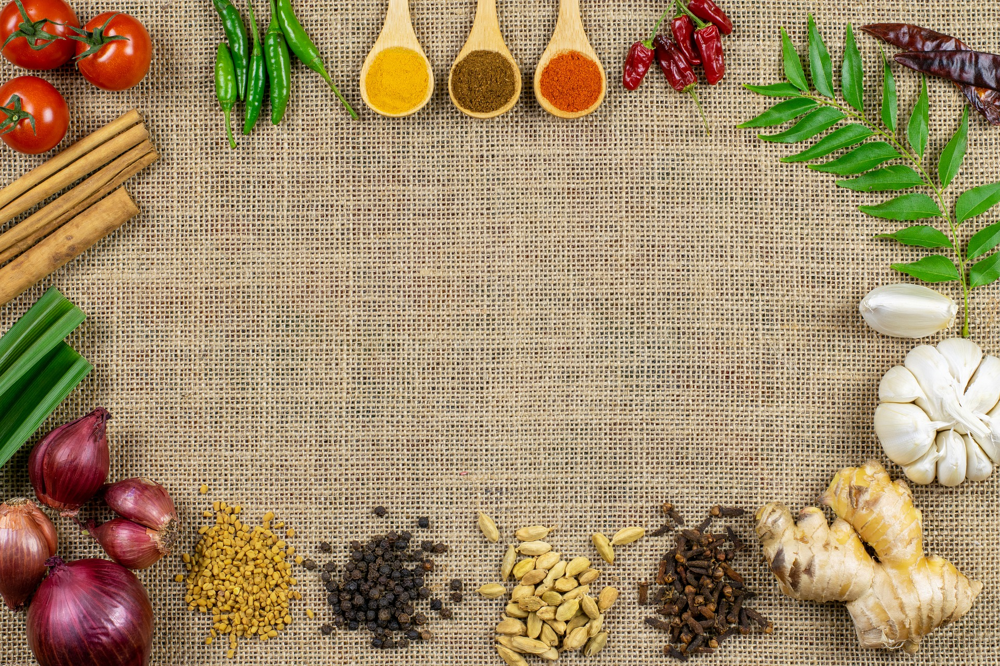
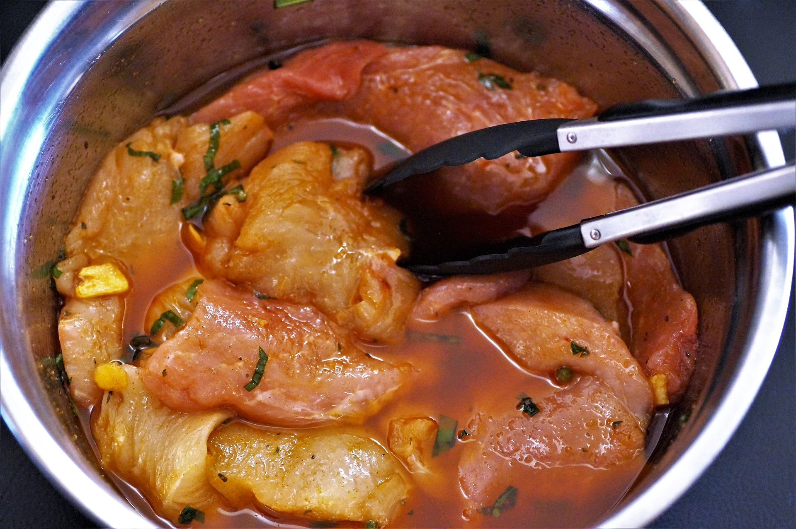
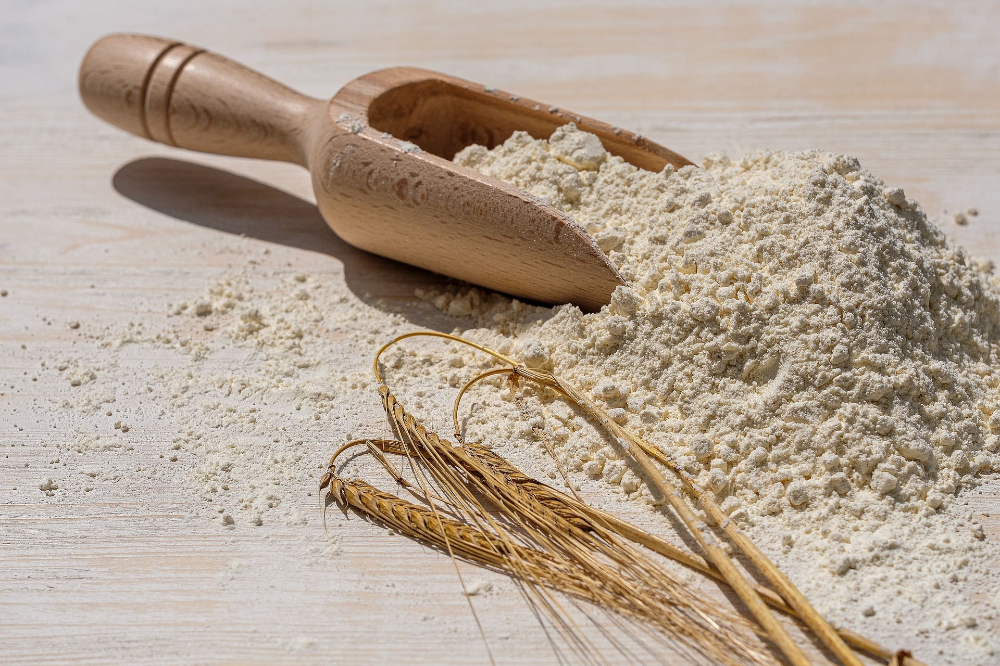
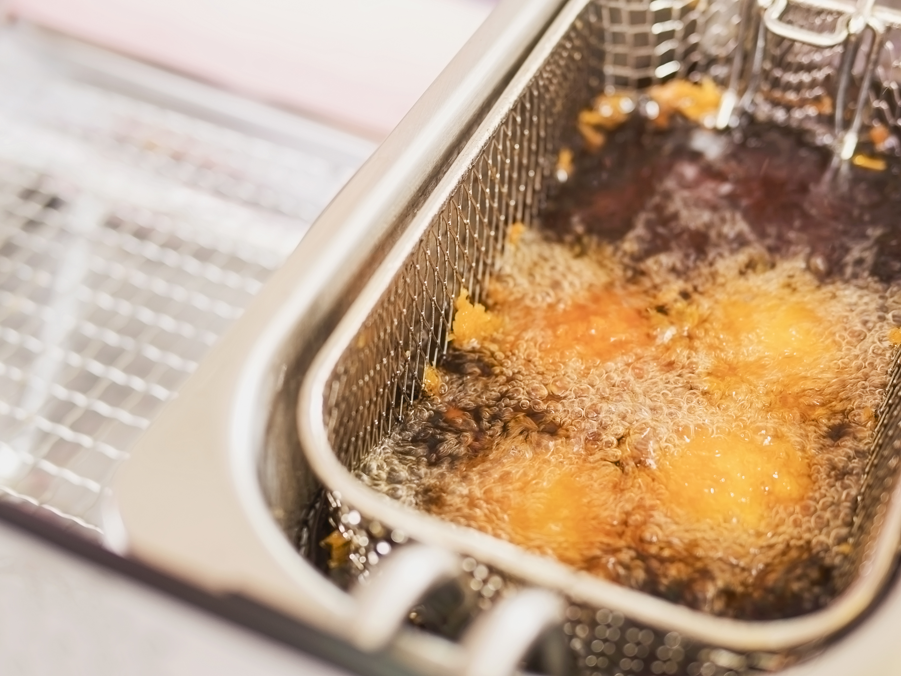

Enjoy spicy crispy Fried Chicken by making right way

step-one
seasoning
ingredients
- corinander seed powder.
- smoked paprika.
- cayenne pepper.
- onion powder.
- garlic salt.
- white pepper.
- salt.
- brown sugar.
- bay leaves.
methode
To make the spice mix, mix all the ingredients.
and spices into a bowl or
plastic container in, then stir evenly
add two liters of cold water for 400grm of seasoning,
stir until all the spices
and spices mixed well.

step-two
marinade
methode
place the chicken pieces into the container, then
Pour the seasoning mixture into a container filled with chicken pieces,
stir evenly for about 10 minutes until the mixture of spices and chicken pieces
covered everything, then store and refrigerate for at least 2 hours.

step-three
mix the powder
ingredients
- low protein flour
- table salt
methode
mix the flour with the table salt
until evenly mixed then breading chicken pieces
into the flour that has been mixed with table salt and do it
Breading motion, namely spoon from below and lift to do the movement
it 7 times.

step-four
frying
methode
Heat the oil to a depth of 10 cm in a shallow pan or deep-fat fryer
until it reaches 175℃. Lower two or three thighs at a time
and fry undisturbed for 3 minutes, making sure the temperature
doesn't drop below 160℃ (should stay around 170℃).
Turn the thighs over and fry for another 2-3 minutes until
golden and crispy on both sides. Lift the chicken out and
transfer to a tray lined with kitchen paper to drain,
then place on a rack and keep warm in the low oven while
you fry the remaining thighs.